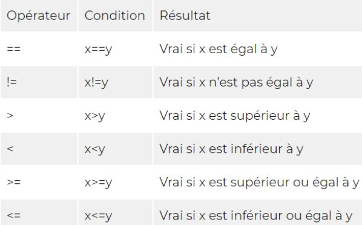

Rangement (VSC, ...)
base
components
layouts
pages
themes
utils
vendors
BEM
author_portrait--small
Block Element Modifier
Block : Composant
Element : Élément au sein du composant
Modfier : Variante de Block ou Element
Sass + BEM
.block__element--modifier (CSS) = .block &__element et &--modificateur
Nesting
nav
{
ul
{
margin: 0;
padding: 0;
list-style: none;
}
li
{
display: inline-block;
}
a
{
display: block;
padding: 6px 12px;
text-decoration: none;
}
}
Combinateurs
Parent → .parent {}
Descendant → .parent .descendant {}
Parent > Enfant → .parent > .child {}
Adjacent .parent + .adjacent {}
& + Pseudo-classe. &:hover/...{}
Variable classique
$nomdelavariable: colueur/calcul/booléen
Variable à liste
$nomdelavariableàliste: V1 V2 V3 V4;
.class (Si l'on veut choisir une seule valeur)
{
font-size: nth($NomDeLaVariableÀListe, 4);
}
Map
Map = Liste de Clés/valeurs (couleur/calcul/booléen) à appeler via "map-get"
$map: (cle1: valeur1, cle2: valeur2, cle3: valeur3);
.block
{
font-size: map-get($map, cle1);
}
Variable à liste + map
On appelle la map et une ou plusieurs valeurs
$nomdelavariableàlisteplusmap: (logo:V, heading:V, project-heading:V, logo:V); → .class{map-get($font-size, label);}
Boucles
@for
@while
@if
Conditions
@if [condition]
{
// CSS si vrai
}
@else
{
// CSS si faux
}
else if
{
// CSS si ni vrai ni faux
}
a == b : a est egale à b
a > b : a est plus grand que b
a < b : a est plus petit que b
a >= b : a est plus grand ou égal à b
a <= b : a est plus petit ou égal à b
@mixin / @include
À placer dans un fichier scss autre (@mixin) que le fichier principal (@include).
@mixin heading-bloc ()
{
text-shadow: Xrem, Xrem, blue;
}
@include heading-bloc();
@mixin à argument(s) [variable(s) dans une @mixin]
Placer des variables DANS la @mixin + Déclarer dans les () de @mixin + Dans le même ordre dans les () d'@include
@mixin button ($head-font, $background-color, $color)
{
font-family: $head-font;
...
background-color: $background-color;
color: $color;
}
@include button ($head-font, $background-color, $color)
Map avec @mixin
$exemplemap:
(
active:
(bg: $color-primary, border: $color-secondary),
focus:
(bg: $color-secondary, border: $color-primary)
);
@mixin exemplemap($permetdechoisirundes2)
{
$permetdenepasrépéterlaligneaudessus: map-get(exemplemap, $permetdechoisiractiveoufocus);
border: .1rem solid map-get($permetdenepasrépéterlaligneaudessus, border);
background-color: map-get($permetdenepasrépéterlaligneaudessus, bg);
}
@include exemplemap(focus);
@extend
(À n'utiliser qu'en dernier recours, sur des classes
parentes inchangeable ou presque. Fonctionne aussi
sur des classes silencieuses)
.class
{
display: flex;
}
.classextend
{
@extend;
}
@function nomdelafonction($argumentsibesoin)
.classoùonveutlafonction
{
width: nomdelafonction($argumentsibesoin);
}
On passe des données, fait les calcul, et renvoie le résultat
background-color: darken(#ff0000, 10%);
Action(s) en fonction d’une ou plusieurs conditions.
@if, @else, @each, ... / and, or
@if (lightness($color) > 25%)
{
$color: lighten($color, 10%);
}
@else
{
$color: darken($color, 10%);
}

CSS
@media screen and (max-width: 1280px)
{
}
SCSS
.randomclass
{
display : flex;
@media (max-width: 599px)
{
display: none;
}
}
Map Breakpoints (stocke les breakpoints)
$breakpoints: (
mobile: 599px,
laptop: 1024px
);
@mixin mobile-only
{
@media screen and (max-width: map-get($breakpoints, mobile))
{
background-color: blue;
}
}
.randomclass
{
display: flex;
@include mobile-only;
}
@content = Placeholder pour des media queries spécifiques
Pas compris l'intérêt et comment l'utiliser.